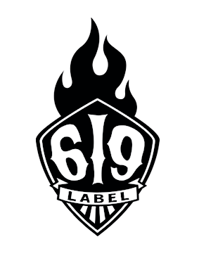

Découvrez ou retrouvez dans ces ouvrages l'ambiance et le background du célèbre jeu en ligne éponyme DOFUS. Vous accompagnerez les plus illustres guerriers du Monde des Douze dans leur quête des Dofus et rencontrerez au fil de ces aventures des créatures plus terribles les unes que les autres !
Ankama Editions
Ankama Éditions est une filiale de la société Ankama créée en octobre 20062 spécialisée dans l'édition. Depuis 2006, Ankama édite ses propres projets papier par le biais de cette société. Une partie des ouvrages publiés sont issus de l'univers du Krosmoz, mais pas exclusivement, car Ankama Éditions publie également d'autres indépendantes dans des répertoires variés, divisés en plusieurs collections.
Dofus
- Artbooks
- Mangas
- BDs
- Romans
- Livres d'activités
Wakfu
La collection Wakfu elle se tourne sur l'univers de wakfu, qui prend place des siècles après l'époque de Dofus et à la reconstruction du monde sur de nouvelles valeurs, après l'inondation du « Monde des Douze »
- Artbooks
- BDS
- Mangas
Maliki
Découvrez l'univers dynamique et acidulé de Maliki, une série de BD au style manga qui dépeint le quotidien et les états d'âme d'une jeune fille au caractère pétillant.
- BD
- Romans

Label 619
Le Label 619 réunit une sélection de BD et d'ouvrages inspirés des univers contemporains, pop et modernes, résolument orientés culture urbaine avec des titres phares tels que Mutafukaz, Freaks' Squeele, DoggyBags et bien d'autres.
- Artbooks
- livres d'activités
- BD
- Comics
- Revues
- Romans